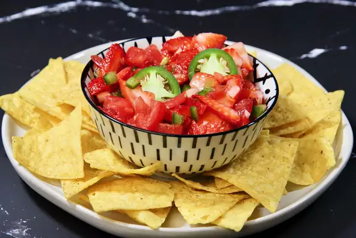

Strawberry Salsa

Description
A sweet salsa that is great with pork and chicken dishes.
-Serves 2 people
Ingredients
- 1 pint fresh strawberries, sliced
- 4 roma(plum) tomatoes, seeded and chopped
- 1 jalapeno pepper, seeded and minced
- 2 cloves garlic, minced
- 1 lime, juiced
- 1 tbs olive oil
Steps
- In large bowl, combine strawberries, tomatoes, chile peppers, garlic, lime juice and oil
- Toss together to mix and coat
- Cover dish and refrigerate for 2 hours to chill
- Ready to serve!